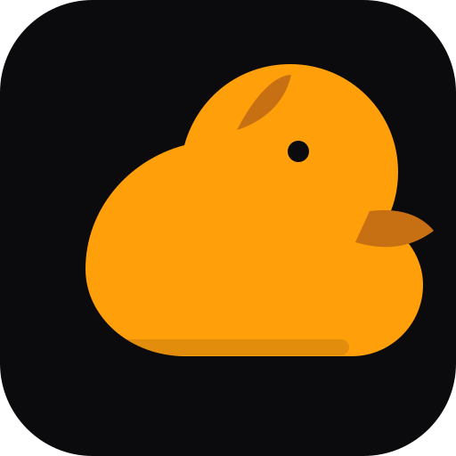

NUN / 02
09:41
5G

NUNLAUNCHER
/ AURA
A new day,
a new orbit.
U
✦
WEDNESDAY / YOUR SPACE
✦
09
:
41
NOVEMBER 11 / 2026
✧
Stay in your orbit.
Make today beautifully yours.
↗
✦
⌕
SEARCH
YOUR COLLECTION
Apps
& tools
APP LIBRARY
↗
N
✦
NUN Core
Files
Terminal
Studio
◌
Gallery
✎
Notes
Settings
Library
◔
⌁
◎
THE NUN COLLECTION
Everything
within reach.
×
All
System
Creative
Daily
YOUR PERSONAL APPLICATION SPACE
DEVICE CONTROL
Feel the
flow.
×
09:41
WED · NOV 11
Wi-Fi
Connected
Bluetooth
On
Flashlight
Off
Quiet mode
Off
SCREEN LIGHT
×
✦
NUNLAUNCHER / APPLICATION
Application
SHORTCUT PREVIEW · NO APP SERVICE CONNECTED
Back to your space
↗